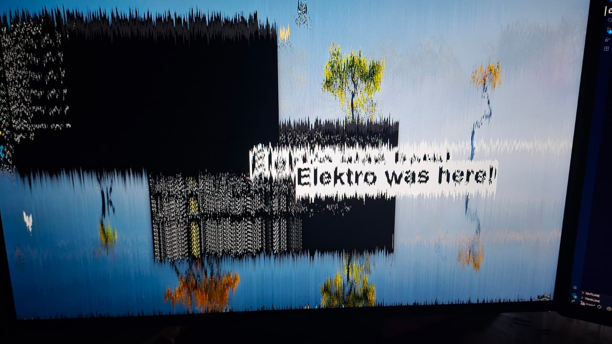

Questo SUBWOOFER me lo sono costruito da solo (perche' odio i miei vicini)
23 set 2026
Il minimalismo moderno FA SCHIFO! Viva l'estetica Y2K!
17 ago 2026
Ho Messo KO un Router con il mio telefono custom!
7 ago 2026
Projects
")
FKING LOUD
La mia serie di subwoofers PA e fullrange ad alta sensibilità (fullrange in sviluppo)
")
Telefono Custom
Più figo dell'iPhone 27 Pro Max... Kali Linux nelle tue mani

TheFunnyProject
Un malware-like che crea FX a schermo grazie alle API di Windows, gli effetti puoi attivarli e disattivarli da remoto.
Dumps >
Pensieri e critiche varie
Music & Hardstyle >
Bassi distorti & synths aggressivi
Whoami >
Do vita a tutto quello che non è classificabile
follow.me.local
x
root@elektrowindows:~$ ./show-endpoint.sh
Public endpoints:
YouTube https://www.youtube.com/@elektrowindows
Instagram https://www.instagram.com/elektrowindows/
TikTok https://www.tiktok.com/@elektrowindows